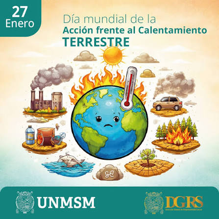
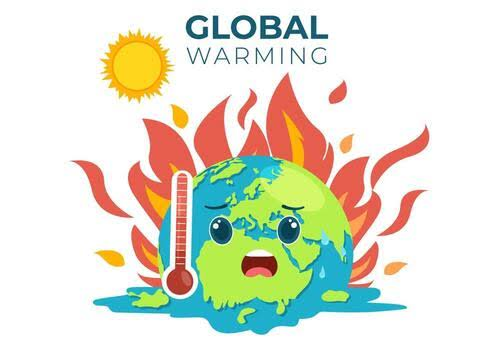

Causas principales
Combustibles fósiles: Quemar carbón, gas y petróleo libera dióxido de carbono.
Deforestación: Cortar árboles reduce la capacidad del planeta para absorber gases contaminantes.
Actividades industriales: Procesos de fábrica y ganadería generan metano y óxido nitroso.
Consecuencias visiblesDerretimiento de hielos: Los glaciares y las capas polares disminuyen de tamaño.
Aumento del nivel del mar: El agua caliente y el hielo derretido inundan zonas costeras.
Clima extremo: Se producen sequías fuertes, olas de calor y tormentas con mayor poder.
calentamiento global
29/07/2026 por:Nicole Reséndiz Olvera